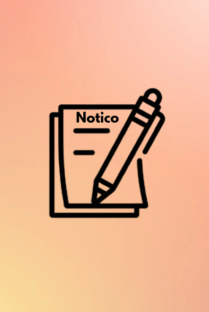

NOTICO MAX
Offline mode
You are offline
NoticoMax cannot reach the live app right now. Previously saved local data remains on this device, and sync will resume when the connection returns.
No black screen
This fallback is built into the app shell. Reconnect and retry to reopen your workspace.